第 1 题 #
1.A. She is a great athlete.B. She is a famed speaker.C. She is a famous scientist.D. She is a noted inventor.
点击查看答案
此题暂无可用答案。
大学英语六级 · questions · 2020
题号和章节目录由结构化数据生成。选项按卷面字母顺序显示；原标记保留在 JSON 中。
Directions: In this section, you will hear two long conversations. At the end of each conversation, you
will hear four questions. Both the conversation and the questions will be spoken only once.
After you hear a question, you must choose the best answer from the four choices marked
single line through the centre.
Questions 1 to 4 are based on the conversation you have just heard.
此题暂无可用答案。
2.
此题暂无可用答案。
3.
此题暂无可用答案。
4.
Questions 5 to 8 are based on the conversation you have just heard.
此题暂无可用答案。
此题暂无可用答案。
6.
此题暂无可用答案。
此题暂无可用答案。
此题暂无可用答案。
Directions: In this section, you will hear two passages. At the end of each passage, you will hear three
or four questions. Both the passage and the questions will be spoken only once. After you
hear a question, you must choose the best answer from the four choices marked A), B),
through the centre.
Questions 9 to 11 are based on the passage you have just heard.
9.
此题暂无可用答案。
10.
此题暂无可用答案。
11.
Questions 12 to 15 are based on the passage you have just heard.
此题暂无可用答案。
12.
此题暂无可用答案。
13.
此题暂无可用答案。
14.
此题暂无可用答案。
15.
此题暂无可用答案。
Directions: In this section, you will hear three recordings of lectures or talks followed by three or four questions. The recordings will be played only once. After you hear a question, you must choose the best answer from the four choices marked A), B), C) and D). Then mark the corresponding letter on Answer Sheet 1 with a single line through the centre.
Questions 16 to 18 are based on the recording you have just heard.
此题暂无可用答案。
17.
此题暂无可用答案。
Questions 19 to 21 are based on the recording you have just heard.
此题暂无可用答案。
19.
此题暂无可用答案。
20.
本页部分文字层异常，已保留原图文字区域；这些区域随窗口缩放，暂不能重新换行或复制。
此题暂无可用答案。
21.
Questions 22 to 25 are based on the recording you have just heard.
此题暂无可用答案。
22.
此题暂无可用答案。
23.
此题暂无可用答案。
24.
此题暂无可用答案。
25.
此题暂无可用答案。
Directions: In this section, there is a passage with ten blanks. You are required to select one word for
each blank from a list of choices given in a word bank following the passage. Read the
by a letter. Please mark the corresponding letter for each item on Answer Sheet 2 with a
single line through the centre. You may not use any of the words in the bank more than
once.
The United Nations issued a report last week warning that humans are destroying nature at such a rate that life on Earth is at risk. When the report came out, it naturally 26 headlines. But
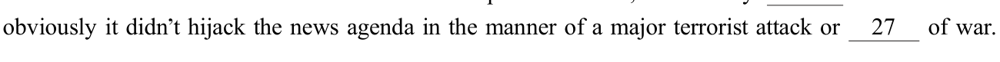
本页部分文字层异常，已保留原图文字区域；这些区域随窗口缩放，暂不能重新换行或复制。
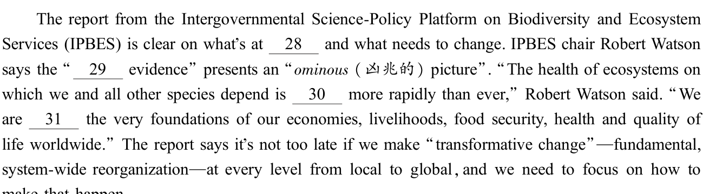
make that happen.
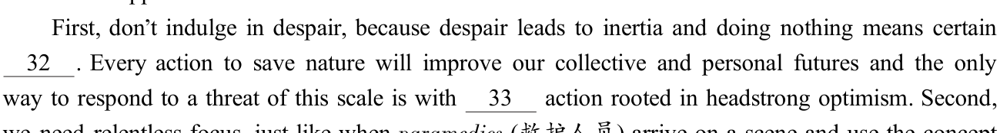
we need relentless focus, just like when paramedics (救护人员) arrive on a scene and use the concept
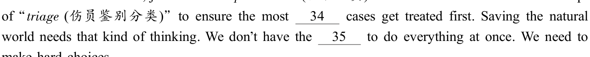
make hard choices.
statement contains information given in one of the paragraphs. Identify the paragraph from which the information is derived. You may choose a paragraph more than once. Each paragraph is marked with a letter. Answer the questions by marking the corresponding letter on Answer Sheet 2.
Children Understand Far More About Other Minds Than Long Believed
A) Until a few decades ago, scholars believed that young children know very little, if anything, about what others are thinking. Swiss psychologist Jean Piaget, who is credited with founding the
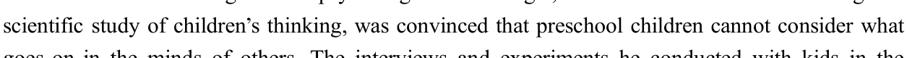
goes on in the minds of others. The interviews and experiments he conducted with kids in the
middle of the 20th century suggested that they were trapped in their subjective viewpoints,
本页部分文字层异常，已保留原图文字区域；这些区域随窗口缩放，暂不能重新换行或复制。
incapable of imagining what others think, feel or believe.
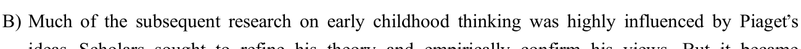
increasingly clear that Piaget seemed to have gravely underestimated the intellectual powers of very young kids before they can make themselves understood by speech. Researchers began to devise ever more ingenious ways of figuring out what goes on in the minds of babies, and the
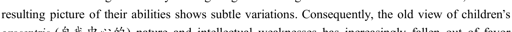
and become replaced by a more generous position that sees a budding sense not only of the
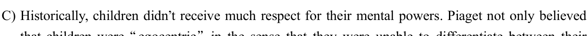
own viewpoint and that of others; he was also convinced that their thinking was characterized by
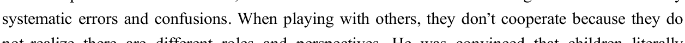
not realize there are different roles and perspectives. He was convinced that children literally

by side, with little regard for others. And when speaking with others, a young child supposedly
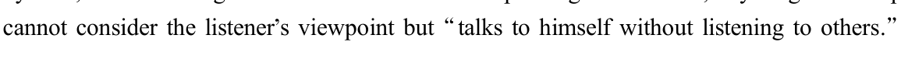
D) Piaget and his followers maintained that children go through something like a dark age of intellectual development before slowly and gradually becoming enlightened by reason and rationality as they reach school age. Alongside this enlightenment develops an ever growing understanding of other persons, including their attitudes and views of the world.

including their understanding of other minds. Recent studies suggest that even infants are
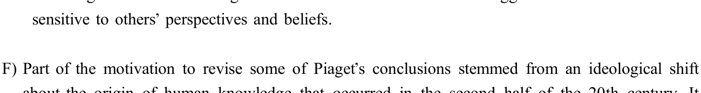
about the origin of human knowledge that occurred in the second half of the 20th century. It became increasingly unpopular to assume that a basic understanding of the world can be built entirely from experience. This was in part prompted by theorist Noam Chomsky, who argued that something as complex as the rules of grammar cannot be picked up from exposure to speech, but
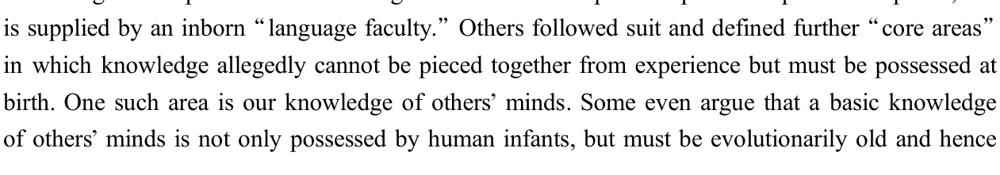
本页部分文字层异常，已保留原图文字区域；这些区域随窗口缩放，暂不能重新换行或复制。
shared by our nearest living relatives, the great apes.
G) To prove that infants know more in this realm than had been acknowledged, researchers needed to come up with innovative ways of showing it. A big part of why we now recognize so much more
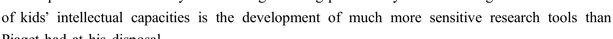
Piaget had at his disposal.
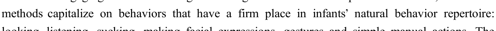
looking, listening, sucking, making facial expressions, gestures and simple manual actions. The
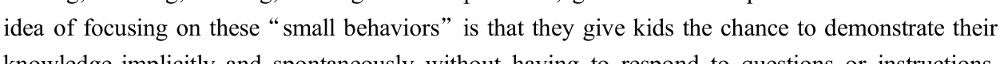
knowledge implicitly and spontaneously without having to respond to questions or instructions. For example, children might look longer at an event that they did not expect to happen, or they might show facial expressions indicating that they have sympathetic concern for others. When researchers measure these less demanding, and often involuntary, behaviors, they can detect a
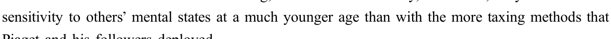
Piaget and his followers deployed.
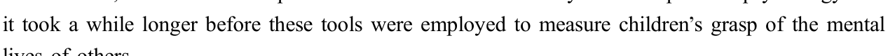
lives of others.
J) In a set of experiments, my colleagues at the University of Southern California and I found evidence that babies can even anticipate how others will feel when their expectations are

puppet shows, a protagonist (Cookie Monster) left his precious belongings (cookies) on stage and later returned to fetch them. What the protagonist did not know was that an antagonist had come and messed with his possessions. The children had witnessed these acts and attentively watched the
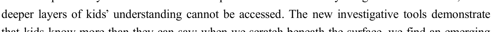
wrinkled their nose or wiggled (扭动) in their chair when the protagonist came back, as if they anticipated the bewilderment and disappointment he was about to experience. Importantly, children showed no such reactions and remained calm when the protagonist had seen the events himself and thus knew what to expect. Our study reveals that by the tender age of two, kids not only track what others believe or expect; they can even foresee how others will feel when they discover reality.
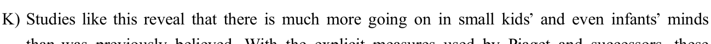
than was previously believed. With the explicit measures used by Piaget and successors, these

that kids know more than they can say: when we scratch beneath the surface, we find an emerging
本页部分文字层异常，已保留原图文字区域；这些区域随窗口缩放，暂不能重新换行或复制。
understanding of relations and perspectives that Piaget probably did not dream of.
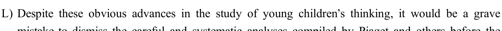
mistake to dismiss the careful and systematic analyses compiled by Piaget and others before the
new tests dominated the scene because the original methods revealed essential facts about how
children think that the new methods cannot uncover.
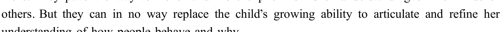
facial expression or a hand gesture. These behaviors clearly indicate a curiosity about what goes
on in the mind of others, and probably a set of early intuitions coupled with a willingness to learn
more. They pave the way to richer and more explicit forms of understanding of the minds of

understanding of how people behave and why.
36. Piaget believed that small children could not collaborate with others while playing.
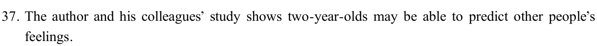
此题暂无可用答案。
37. The author and his colleagues’ study shows two-year-olds may be able to predict other people’s feelings.
此题暂无可用答案。
38. In the latter half of the last century, fewer and fewer people believed the basis for our
understanding of the world is wholly empirical.
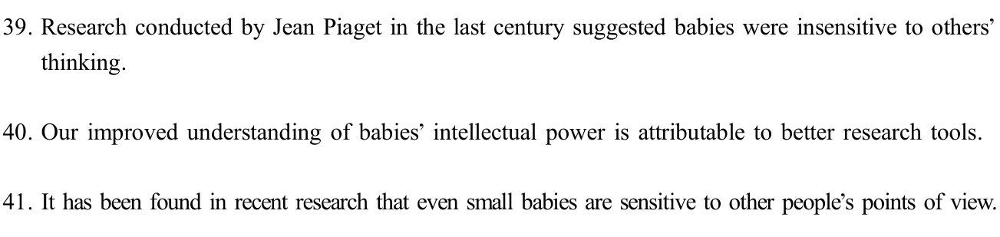
此题暂无可用答案。
39. Research conducted by Jean Piaget in the last century suggested babies were insensitive to others’ thinking.
此题暂无可用答案。
40. Our improved understanding of babies’ intellectual power is attributable to better research tools.
此题暂无可用答案。
41. It has been found in recent research that even small babies are sensitive to other people’s points of view.
此题暂无可用答案。
42. Scientists are still debating what inference can be drawn from certain physical expressions of a
child.

此题暂无可用答案。
43. The newer research methods focus on infants’ simple behaviors instead of requiring them to answer questions.
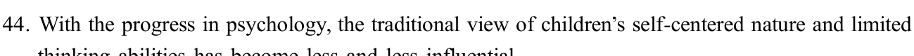
此题暂无可用答案。
44. With the progress in psychology, the traditional view of children’s self-centered nature and limited thinking abilities has become less and less influential.
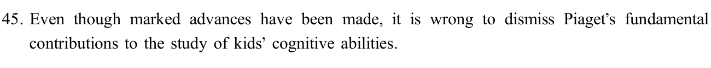
此题暂无可用答案。
45. Even though marked advances have been made, it is wrong to dismiss Piaget’s fundamental contributions to the study of kids’ cognitive abilities.
本页部分文字层异常，已保留原图文字区域；这些区域随窗口缩放，暂不能重新换行或复制。
此题暂无可用答案。
Directions: There are 2 passages in this section. Each passage is followed by some questions or unfinished statements. For each of them there are four choices marked A), B), C) and
Sheet 2 with a single line through the centre.
Questions 46 to 50 are based on the following passage.
People often discuss the dangers of too much stress, but lately a very different view of stress is gaining popularity: this view of stress, held by members of the positive stress movement, argues that stress might actually be beneficial. The positive stress movement is made up of people such as
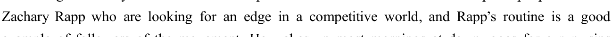
example of followers of the movement. He wakes up most mornings at dawn, goes for a run, sips black coffee while ripping through emails, and then steps into a freezing cold shower. This is a routine designed to reduce the stress of running simultaneously three different health and biotechnology companies for 18 hours a day.
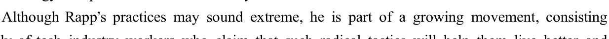
largely of tech industry workers who claim that such radical tactics will help them live better and longer. Inspired by influential figures in different fields, including entertainers, athletes, entrepreneurs and scientists, positive stress practitioners seek out some combination of extreme temperatures, restrictive diets, punishing exercise routines and general discomfort.
Rapp argues that positive stress keeps him balanced. In addition to running and freezing showers, Rapp uses ice baths, hot yoga, and unconventional eating practices such as eliminating dairy, sugar, alcohol and various other foods high in carbohydrates. He believes that these practices, which put stress on his body, actually make him feel less stress from work. However, Rapp does not credit anyone in particular for his choices: he said he started using these methods in college, where he got into the habit of taking ice baths to recover from sports. He got back into it while trying to get his three companies off the ground.
Rapp works long hours and sleeps only five to seven hours a night but he said he only gets sick once a year. For him, the difference between day-to-day stress, like the kind we feel when moving apartments, and positive stress is that the latter involves pushing the body to extremes and forcing it to build up a tolerance.
One thought leader in the positive stress world is Dutch extreme athlete Wim Hof, who earned
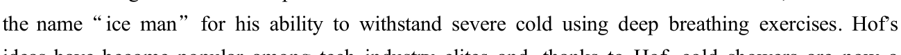
ideas have become popular among tech industry elites and, thanks to Hof, cold showers are now a trend; indeed, some even call it a form of therapy.
But it is important to note that not everyone agrees with these practitioners; indeed, some medical professionals argue that positive stress is not for everyone, and that it might even be dangerous for people who are unhealthy or older.
46. What do we learn about followers of the positive stress movement?
此题暂无可用答案。
47. What do followers of the positive stress movement usually do to put their ideas into practice?
此题暂无可用答案。
48. What does Zachary Rapp say about his unconventional practices?
此题暂无可用答案。
49. What can be inferred from the passage about day-to-day stress?
此题暂无可用答案。
50. What do some medical professionals think of positive stress?
此题暂无可用答案。
Questions 51 to 55 are based on the following passage.
Is hunting good or bad for the environment? Like so many hot button issues, the answer to this question depends upon who you ask. On the one hand, some say, nothing could be more natural than
本页部分文字层异常，已保留原图文字区域；这些区域随窗口缩放，暂不能重新换行或复制。
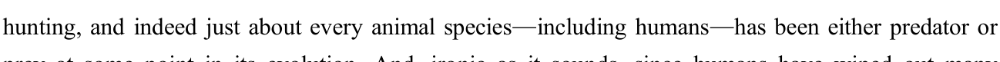
prey at some point in its evolution. And, ironic as it sounds, since humans have wiped out many animal predators, some see hunting as a natural way to reduce the herds of prey animals that now
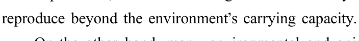
On the other hand, many environmental and animal advocates see hunting as savage, arguing that it is morally wrong to kill animals, regardless of practical considerations. According to Glenn
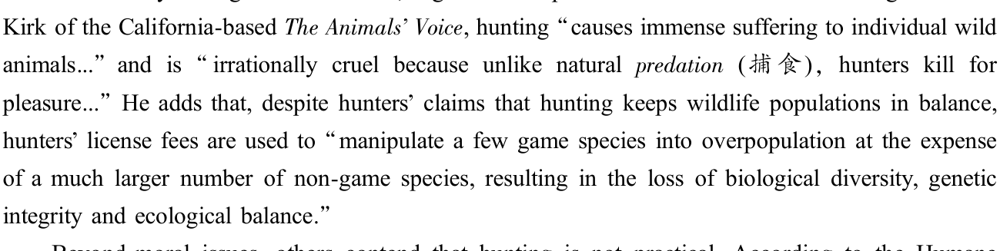
Beyond moral issues, others contend that hunting is not practical. According to the Humane
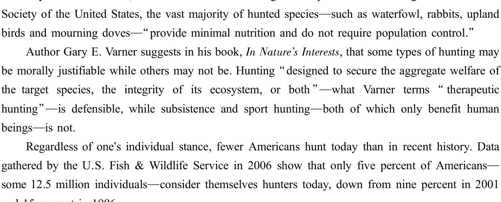
and 15 percent in 1996.
Public support for hunting, however, is on the rise. A 2007 survey by Responsive Management
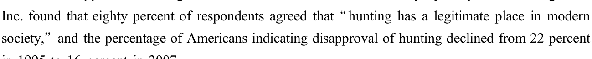
in 1995 to 16 percent in 2007.
Perhaps matching the trend among the public, green leaders are increasingly advocating cooperation between hunters and environmental groups: After all, both deplore urban sprawl and habitat destruction.
51. What does the author say sounds ironic?
此题暂无可用答案。
52. What does Glenn Kirk think of charging hunters license fees?
此题暂无可用答案。
53. What is the argument of the Humane Society of the United States against hunting?
此题暂无可用答案。
54. When is hunting morally justifiable according to Gary E. Varner?
此题暂无可用答案。
55. What concept are green leaders trying to promote?
此题暂无可用答案。
Directions: For this part, you are allowed 30 minutes to translate a passage from Chinese into
English. You should write your answer on Answer Sheet 2.
《三国演义》(The Romance of the Three Kingdoms)是中国一部著名的历史小说,写于十四世纪。这部文学作品以三国时期的历史为背景,描写了从公元二世纪下半叶到公元三世纪下半叶的魏、蜀、吴三国之间的战争。小说中刻画了近千个人物和无数的历史事件。这些人物和事件虽然大都基于真实的历史,但都不同程度地被浪漫化和戏剧化了。《三国演义》是一部公认的文学杰作。自面世以来,这部小说不断吸引着一代又一代的读者,并且对中国文化产生了广泛而持久的影响。
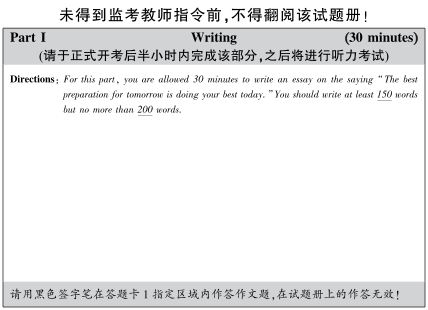
I I I I I I I I I I I I I I I I